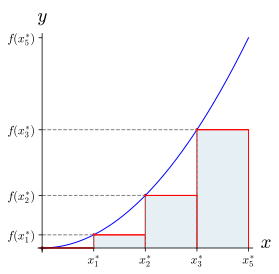
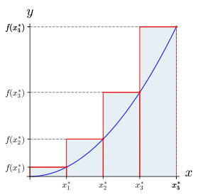
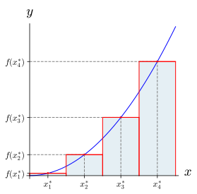

A letra grega \(\Sigma\) (sigma) é utilizada para expressar somatórios de grande quantidade de números de maneira simplificada e compacta. Por exemplo, a soma
Neste caso, dizemos que o somatório dos 100 primeiros naturais está expresso na notação sigma \(\sum_{k=1}^{100}k \text{,}\) a qual se lê "somatório de \(k\text{,}\) com \(k\) variando de 1 a 100". Mais geralmente, considere \(f\) uma função definida um intervalo \([a,b]\) e seja \(x_1, x_2 ,\ldots x_n \) números reais, todos em \([a,b]\text{.}\) Então a soma
Sejam \(x_1^{\ast}, x_2^{\ast}, \ldots, x_n^{\ast} \) números arbitrários de forma que \(x_k^{\ast}\) pertençam ao k-ésimo subintervalo \([x_{k-1}, x_k]\) de \([a,b]\text{.}\) Se \(f(x)\) é uma função definida em \([a,b]\text{,}\) então a soma
\begin{align}
\amp \sum_{k=1}^{n}f(x_k^{\ast})\Delta x_k, \qquad 1\leq k \leq n.\tag{1.1.1}
\end{align}
é denominada Soma de Riemann de \(f\) sobre \([a,b]\) na partição \(\{x_0, x_1, \ldots, x_{n}\}\text{.}\)
Nota1.1.4.
Para simplificar é comum usar subintervalos de mesmo comprimentos, de modo que
\begin{equation*}
\Delta x_k = \Delta x = \frac{b-a}{n}, \qquad 1\leq k \leq n.
\end{equation*}
Na Definição 1.1.3 deixamos claro que a escolha de \(x_k^{\ast} \) em cada subintervalo é arbitrária, no entanto, algumas escolhas comuns:
Soma de Riemann à esquerda é quando cada \(x_k^{\ast}=x_{k-1}\) é a extremidade esquerda do subintervalo \([x_{k-1},x_k] \text{.}\)
Soma de Riemann à direita é quando cada \(x_k^{\ast}=x_{k}\) é a extremidade direita do subintervalo \([x_{k-1},x_k] \text{.}\)
Soma de Riemann do ponto médio é quando cada \(x_k^{\ast}=(x_{k-1}+x_k)/2\) é o ponto médio do subintervalo \([x_{k-1},x_k] \text{.}\)
Se \(f\) for positiva, então a soma de Riemann pode ser interpretada como uma soma de áreas de retângulos cuja base vale \(\Delta x\) e sua altura é \(f(x_k^{\ast})\) (veja a Figura 1.1.5–1.1.7). Se \(f\) assumir valores positivos e negativos, como na Figura 1.1.8, então a soma de Riemann é o resultado da diferença entre as áreas dos retângulos que estão acima do eixo \(x\) e as áreas dos retângulos que estão abaixo do eixo \(x\text{.}\)
Figura1.1.5.\(\sum_{k=1}^{n}f(x_k^{\ast})\Delta x\) é a soma de Riemann à esquerda.
Figura1.1.6.\(\sum_{k=1}^{n}f(x_k^{\ast})\Delta x\) é a soma de Riemann à direita.
Figura1.1.7.\(\sum_{k=1}^{n}f(x_k^{\ast})\Delta x\) é a soma de Riemann do ponto médio.
Use os retângulos da Figura 1.1.16 e calcule a soma de Riemann de \(f(x)=-x^3-6x\) usando os pontos médios de de cada subintervalo de \([0,3]\text{.}\)Figura1.1.16.
Considerando a Figura 1.1.18 use Soma de Riemann do ponto médio para aproximar a área da região limitada pelo gráfico de \(f(x)=-x^2+ 5\text{,}\) pelo eixo e pelas retas \(x=0\) e \(x=2\text{.}\)
Note que a soma da área de cada retângulo da Figura Figura 1.1.18 é uma aproximação para a área limitada pela curva \(y=-x^2+ 5\text{,}\) pelo eixo \(x\) de \(0\) até \(2\text{.}\) Então,
Na próxima seção vamos deixar estabelecido que aa integral definida é um número que coincide com a soma de Riemann quando a quantidade de retângulos tente para o infinito.